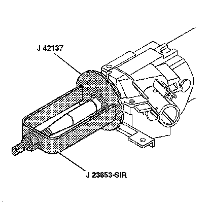
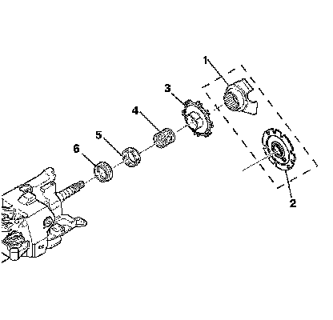

Turn Signal Cancel Cam and Upper Bearing Inner Race Replacement
Turn Signal Cancel Cam and Upper Bearing Inner Race Replacement
Tools Required
* J 23653-SIR Steering Column Lock Plate Compressor
* J 42137 Cam Orientation Plate Adapter
Removal Procedure
Caution: Refer to SIR Inflator Module Coil Caution .
1. Remove the inflatable restraint steering wheel module coil. Refer to Inflatable Restraint Steering Wheel Module Coil Replacement (Removal and Replacement) .
2. Remove the turn signal multifunction switch. Refer to Turn Signal Multifunction Switch Replacement (Turn Signal Multifunction Switch Replacement) .

3. Remove and discard the steering shaft lock plate retaining ring using compressor J 23653-SIR and adapter J 42137 .

4. Remove the steering shaft lock plate (2).
Important: Do not wipe any of the lubricant off of the turn signal cancel cam.
5. Remove the turn signal cancel cam (3).
6. Remove the steering shaft upper bearing spring (4).
7. Remove the steering shaft upper bearing race seat (5).
8. Remove the upper bearing inner race (6).
Installation Procedure
1. Install the upper bearing inner race (6).
2. Install the steering shaft upper bearing race seat (5).
3. Install the steering shaft upper bearing spring (4).
4. Install the turn signal cancel cam (3).
5. Install the steering shaft lock plate (2).
6. Install the new steering shaft lock plate retaining ring using compressor J 23653-SIR and adapter J 42137 .
7. Install the turn signal multifunction switch. Refer to Turn Signal Multifunction Switch Replacement (Turn Signal Multifunction Switch Replacement) .
8. Install the inflatable restraint steering wheel module coil. Refer to Inflatable Restraint Steering Wheel Module Coil Replacement (Removal and Replacement) .